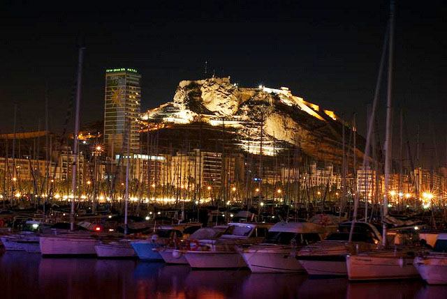
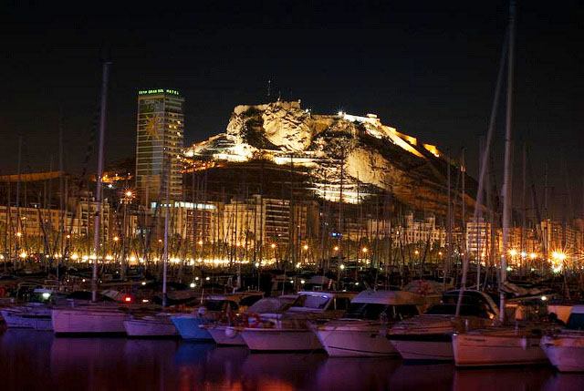
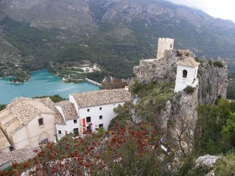
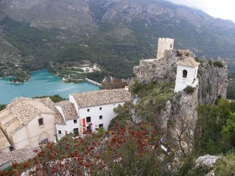
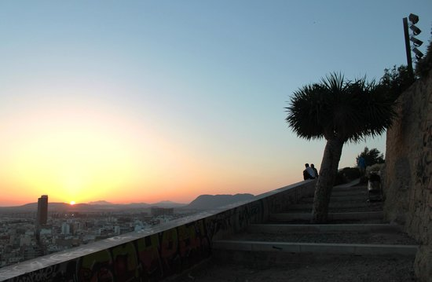
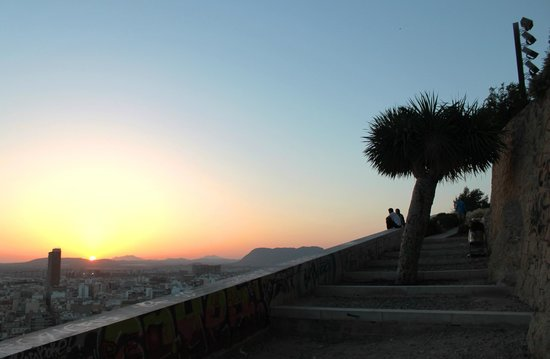

МЕНЮ
Аліканте
Яскравий і незабутній іспанський курорт Аліканте закохує в себе туристів з усіх кінців світу. Його історія сягає корінням ще в часи Карфагенської держави, саме тоді на цьому місці з'явилося укріплене поселення, а сьогодні - це чудове курортне місто, яке радо прийме до своїх палких обіймів всіх охочих. Крім моря і пляжів туристів очікують цікаві пам'ятки Аліканте, відвідування яких наповнить відпочинок новими фарбами.
Що подивитися?
Фортеця Санта-Барбара
Її можна по праву назвати самою відомою і найстарішою пам'яткою міста. Вона була зведена на горі Бенакантиль в далекому 9 столітті нашої ери і перенесла кілька обстрілів і захоплень. Але в середині 20 століття фортеця була відреставрована і тепер з радістю приймає відвідувачів. Дістатися до неї можна на спеціальному швидкісному ліфті. Чудові види і незабутні враження гарантовані!
 

Базиліка Санта-Марія
У числі головних релігійних пам'яток Аліканте - базиліка Санта-Марія. Вона є найстарішою серед інших церков і соборів міста. Зведена вона була в XIV столітті, але, як і в безлічі випадків з іншими храмами по всьому світу, згоріла (в наступному столітті). Однак, її відновлення відхилилося від канонів жанру - нове зведення було вже в іншому місці, а не на колишньому, як зазвичай, відбувається в подібних випадках. Місцем обрали руїни мечеті, що розташовувалися в центральній частині Аліканте. За кілька століть свого існування церква зазнала кілька реконструкцій - її добудовували і "вдосконалили", згідно з поглядами, вимогам і моді епохи. Відвідувати базиліку краще в той час, коли в ній немає церемоній - ніщо не завадить познайомитися з її надбанням ближче.

Печера Канелобре
Її вік налічує понад сім мільйонів років. Канелобре - найбільша (за розмірами, але не по довжині) серед інших печер Іспанії висотою під 70 метрів, де відвідувачам надана можливість познайомитися з "архітектурою", створеної самим часом (і водою, звичайно).


Долина Гуадалест
Мальовниче місце - долина Гуадалест. Тут уздовж дороги і за кожним поворотом туристів чекають не тільки чудові краєвиди, а й замки Середньовіччя, старовинні поселення та історичні пам'ятки.
 



Квартал Санта-Крус
Під відомою і озвученою вище пам'яткою Аліканте - фортецею Санта-Барбара - розташувався найстаріший квартал міста, що носить назву Санта-Крус. Примітний і цікавий він тим, що його колорит явно відрізняється від звичного європейцям, а вулиці досить вузькі і звивисті, що надає цьому місцю якоїсь загадковості і романтичності. Тут ще можна зустріти домівки, які всім своїм виглядом дають зрозуміти, що перед вами - будівля з цілою історією "за плечима". У кварталі Санта-Круз, назва якого перекладається як "Святий Хрест", ще можна зустріти домівки з віковою історією і навіть кахлями і візерунками того часу на стінах.


Бульвар Еспланада
Головним символом і надбанням Аліканте став бульвар Еспланада, який рискою розташувався між пляжноюї лінією, портом і міською частиною. Його особливістю і родзинкою став величезний малюнок морської хвилі, що утворений декількома мільйонами брущатих каменів, і простягнувся по всій тротуарній частині бульвару. Протяжність Еспланади становить півкілометра, а вздовж усієї його довжини розташувалися кафе з ресторанами і пальми. Це створює неймовірної краси мальовничу картину і стане яскравим і романтичним спогадом в пам'яті будь-якого туриста. Вік алеї налічує вже дві сотні років, але сучасний вигляд вона прийняла лише в 90-х роках минулого століття.
Пляжі.
В Аліканте дуже красиві і доглянуті пляжі з чистим морем блакитного кольору. Найпопулярніший, який розташований в центрі міста, — Playa el Postiguet. Він розкинувся на 1 кілометр, саме тут відпочиває більшість туристів, і я не була винятком. Тому тут ви без праці зможете вдало припаркуватися і взяти напрокат лежаки і парасольки.
Також недалеко від міста розкинувся тихий і затишний пляж Almadraba. Він не численний, що надає цьому місцю романтики і чарівності. Саме тут можна по-справжньому відпочити і забути про повсякденну суєту. До речі, ще тут неймовірні заходи сонця!
Ще один пляж, гідний уваги, — Saladar Urbanova. Він знаходиться в 5 кілометрах на південь від Аліканте, а довжина його досягає 1,5 кілометра. Тут також дуже тихо і безтурботно. Піщані дюни пляжу надають йому особливий шарм.
 
